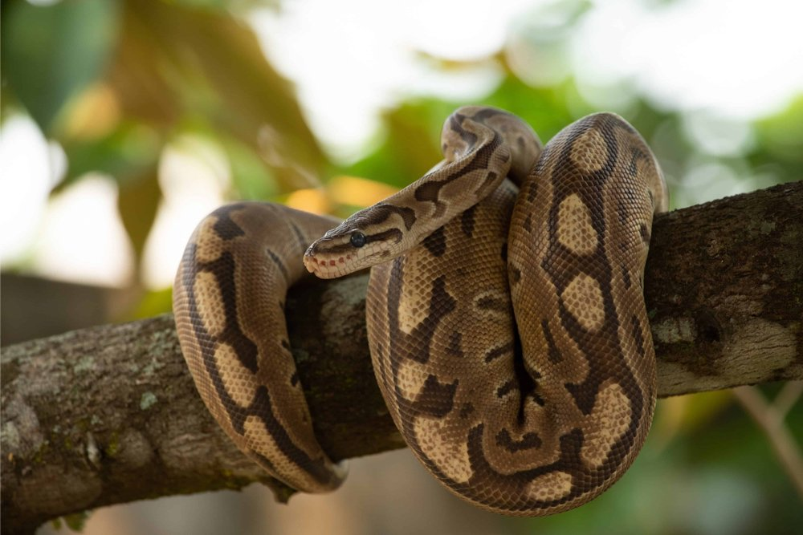
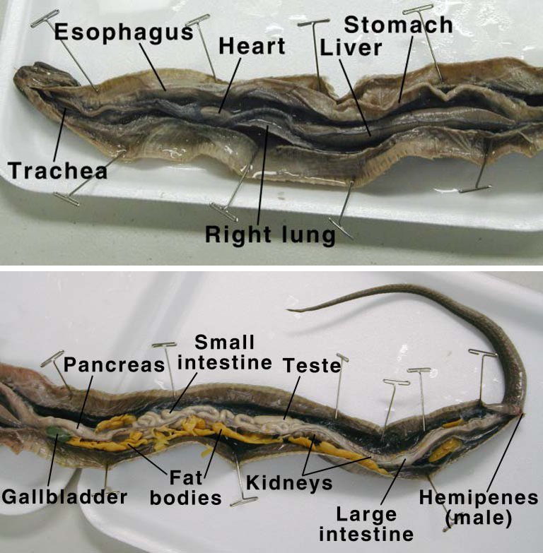

No chewing, no venom. Just coils and a jaw that stretches.
Ball pythons come from the grasslands and lightly wooded parts of West and Central Africa. They're solitary, mostly active at night, and built to ambush rather than chase. The name comes from their signature move: curl into a tight ball with the head tucked safely in the middle when something threatens them. They're also one of the most popular pet snakes around, mostly because they stay a manageable size and have an easygoing temperament.
Small mammals, mostly rodents, with the occasional bird, that's the whole diet. Ball pythons don't chase anything down; they wait. Heat- sensing pits along the jaw pick up the warmth of a nearby animal in total darkness, and a flicking, forked tongue reads scent trails to zero in further. Once prey gets close enough, the snake strikes and constricts, coiling around the animal and squeezing a little tighter every time it exhales until it stops breathing. There's no venom involved at all, it's pure muscle. Then the whole thing gets swallowed whole, which is really the key to everything else here.
Swallowing an entire animal in one go means a single meal can carry a ball python for a long stretch. That makes it a discontinuous feeder: eat big, then go days or even weeks before eating again. It's a carnivore, obviously, and its hunting style is pure ambush, sit still, wait, strike, rather than chasing anything down. All three line up cleanly: ambush hunting barely costs any energy compared to active pursuit, which is exactly what lets the snake get away with going so long between meals.
There's no chewing in this animal's playbook at all. Its teeth curve backward just to grip prey and walk it down the throat, not to cut anything up. The lower jaw is only loosely connected at the chin, and a flexible quadrate bone lets the mouth stretch open far past the width of the snake's own head, wide enough to take prey down whole. Finding that prey in the first place comes down to the heat-sensing pits and that scent-reading tongue.

Labeled snake dissection (esophagus, stomach, small and large intestine). Ball pythons share this same basic layout. Source: homesciencetools.com.
Inside, it's a single-chambered, monogastric stomach, but the actual digestion is handled almost entirely by strong acid and enzymes rather than gut bacteria, strong enough to even break down bone. There's basically no fermentation happening, which makes sense: there's no plant fiber in this diet that would need it. And unlike mammals, there's no real cecum or colon doing fermentation work either; the short intestine at the end mostly just reabsorbs water and gets rid of waste.